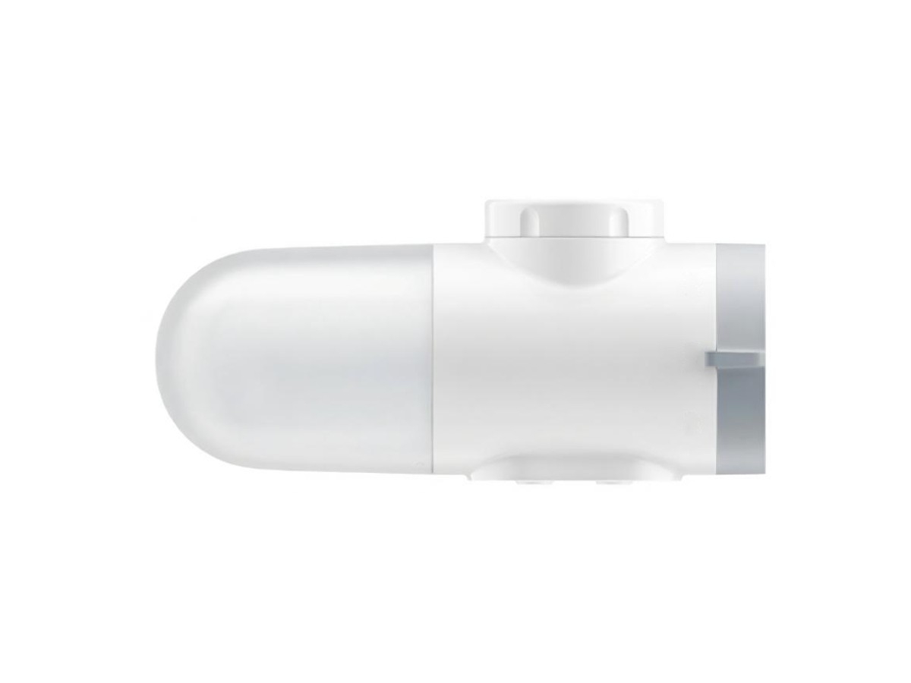
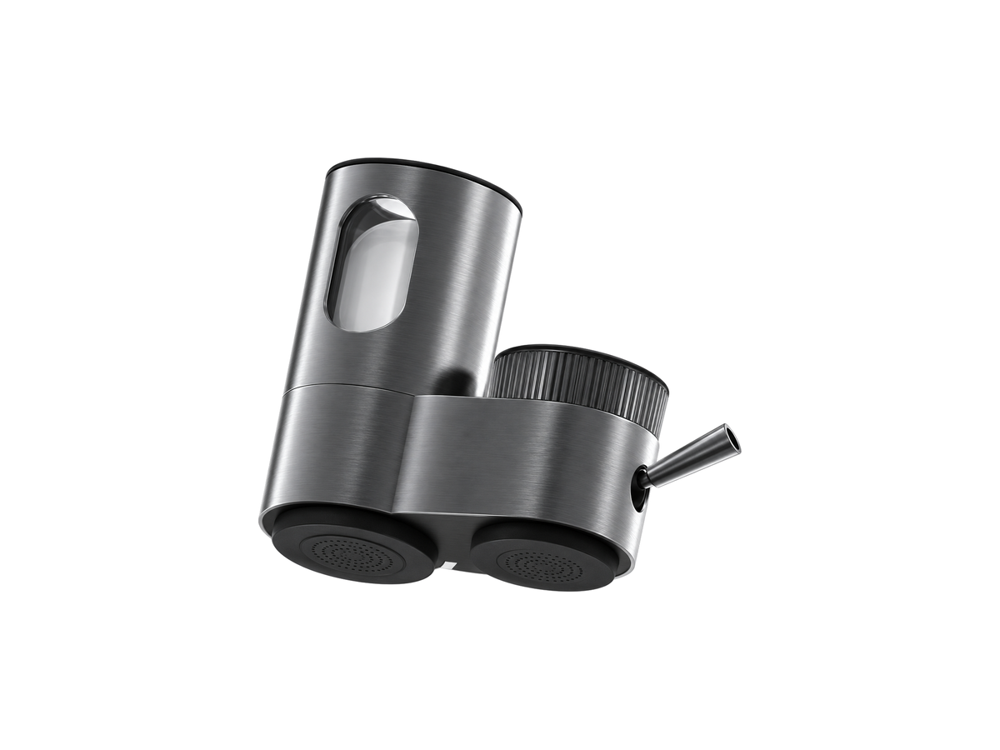

Faucet
FaucetRP-F01
Classic faucet filter
SKU: RP-F01
MOQ: Confirm on enquiry
Home / Products / Faucet Filters / RP-F02

Faucet Filters
360° rotatable faucet filter (SG-LT-18) — seven variants. RP-F02 leads the family.
RP-F02, RP-F03, RP-F04 and RP-F05 are the first four variants of the same faucet filter, sharing the same ABS housing and form. They differ in rotation angle, turbine LED, valve core and switching: RP-F02 — 360° rotation, Ceramic + GAC / CTO / UF + GAC; RP-F03 — adds a water-driven turbine LED blue light ring, Ceramic + GAC / CTO; RP-F04 — 270° rotation, ceramic valve core, turbine LED (SG-LT-17 series; suffix pending confirmation); RP-F05 — ceramic valve core, PUSH button switching. Three further variants join the family: a white capsule faucet purifier (5-stage filtration, 1 unit + 4 cartridges, 145.7 × 66 × 67 mm), a slim-housing gold-finish variant with blue light, and a stainless-steel variant with a transparent viewing window (2.5 L/min, 2000 L rated purified volume, 144 × 114 × 59 mm). Specifications are confirmed per model and order.
Adjustment and finish options are confirmed per order.
Voltage / frequency is configurable to the target country. Other configurations are confirmed per order.
Seven variants — quote as RP-F02 and specify the variant (360° standard, turbine LED, 270° ceramic valve, PUSH button, white capsule, slim gold, or stainless window).
Hover over a variant image to see its specifications. On touch screens, tap an image.




A seventh variant — slim housing, gold finish with blue light — is listed in the comparison table below. A clean product photo is not yet available, so no image is shown for it here.
Full specifications for each variant, side by side. The specification table further down shows RP-F02's values.
| Specification | RP-F02-1 — 360° standard (SG-LT-18) | RP-F02-2 — turbine LED (SG-LT-18F) | RP-F02-3 — 270° ceramic valve (SG-LT-17 series) | RP-F02-4 — PUSH button (SG-LT-18A) | RP-F02-5 — white capsule variant (MJLTJSQDB01) | RP-F02-6 — slim gold (SG-LT-18F) | RP-F02-7 — stainless window variant (SG-LT-17B) |
|---|---|---|---|---|---|---|---|
| Housing | ABS | ABS | ABS | ABS | Confirmed per order | ABS | Stainless steel |
| Cartridge options | Ceramic + GAC / CTO / UF + GAC | Ceramic + GAC / CTO | Ceramic + GAC / CTO | Ceramic + GAC / CTO / UF + GAC | 5-stage filtration, 1 unit + 4 cartridges; activated carbon iodine value ≥1000 mg/g | Ceramic + GAC / CTO / UF + GAC | Ceramic + GAC / CTO / UF + GAC; seven-layer filtration |
| Adjustment | 360° rotation | 360° rotation | 270° rotation | Confirmed per order | Confirmed per order | 360° rotation | Confirmed per order |
| LED option | — | Water-driven turbine LED | Water-driven turbine LED | — | — | Blue light (as shown in catalogue) | — |
| Valve core | Confirmed per order | Confirmed per order | Ceramic | Ceramic | Confirmed per order | Confirmed per order | Confirmed per order |
| Switching | Lever | Lever | Lever | PUSH button | Confirmed per order | Confirmed per order | Lever (raw / purified modes) |
| Water source | Municipal tap water | Municipal tap water | Municipal tap water | Municipal tap water | Municipal tap water | Municipal tap water | Municipal tap water |
| Pure water flow | Confirmed per order | Confirmed per order | Confirmed per order | Confirmed per order | Confirmed per order | Confirmed per order | 2.5 L/min |
| Rated purified volume | Confirmed per order | Confirmed per order | Confirmed per order | Confirmed per order | Confirmed per order | Confirmed per order | 2000 L |
| Dimensions | Confirmed per order | Confirmed per order | Confirmed per order | Confirmed per order | 145.7 × 66 × 67 mm | Confirmed per order | 144 × 114 × 59 mm |
| Working pressure | Confirmed per order | Confirmed per order | Confirmed per order | Confirmed per order | 0.1–0.4 MPa | Confirmed per order | 0.1–0.4 MPa |
| Water temperature | Confirmed per order | Confirmed per order | Confirmed per order | Confirmed per order | 5–38°C | Confirmed per order | 5–38°C |
8 specification rows from the ROPureOEM catalogue.
| Housing | ABS |
|---|---|
| Cartridge options | Ceramic + GAC / CTO / UF + GAC |
| Adjustment | 360° rotation |
| Water source | Municipal tap water |
| Rated flow / capacity | Confirmed per order |
| Filtration precision | Confirmed per order |
| Pressure / temperature | Confirmed per order |
| Cartridge life / dimensions | Confirmed per order |
Specifications are taken from the ROPureOEM catalogue. Where a value is not yet confirmed, it is listed as “Confirmed per order” — we do not publish unconfirmed figures.
FaucetClassic faucet filter
SKU: RP-F01
MOQ: Confirm on enquiry
 Faucet
FaucetCarbon-fibre faucet filter
SKU: RP-F06
MOQ: Confirm on enquiry
 Faucet
FaucetFilter-life display faucet filter
SKU: RP-F08
MOQ: Confirm on enquiry
 Faucet
FaucetFaucet-mounted water filter — integrated
SKU: RP-F10
MOQ: Confirm on enquiry